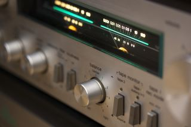
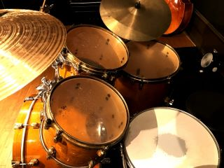
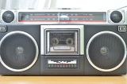
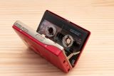
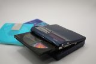
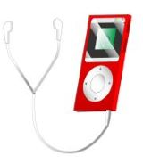

Now and Then |
|  |
きっかけは、ラジオから流れていた
ビルボード誌の週間ランキングヒット曲
カーペンターズのイエスタデー ワンスモア
T-レックスの20センチュリーズボーイ
ウイングスのバンドオンザラン、
エルトンジョンのグッバイイエローブリックロード
ロバータ フラック、カーリー サイモンも
|
 |
英国発祥のプログレッシブロック
イエス、キングクリムゾン、ＥＬ＆Ｐ
和訳見ても理解不能な抒情詩
が、しかし、その詩を歌う最高のボーカル達
ボーカルは、演奏の一部で楽器そのもの
ジョン アンダーソン、グレッグ レイク
なお、シンセサイザーの演奏も彼らから！
|
|
部屋では音楽がずっと流れていた学生時代
悩みに悩んだステレオ機種選定
アンプ、プレイヤー、デッキ、スピーカーと
”エアーチェック”に不可欠なFMチューナー
当時の２大音源を構成したのは
”レコード”と”FM放送”
アルバム全曲流してくれたFM番組に感謝！
立教大生が起業した”黎紅堂”にも感謝！
|
|
記憶に残るコンサートは、
ビリージョエルの屋外コンサート
いつ始まるのか不安になるほど遅れた開始時間
ビール片手に気長に主役の登場を待つ観衆
暗くなって、あちこちのキャンドルが一斉に灯って、
歓声が上がって、音楽が始まって、主役が登場して、
みんな（主催者も観衆も）夕闇を待ってたんだなって
|
|
音楽のジャンルは多種多様
ロック、ポップス、ジャズ／フュージョン、クラシック、イージーリスニング／スクリーンミュージック‥‥‥。
曲名もアーティストは知らなくても、どこかで何かの折に聴いて知っているって曲は沢山あります。
映画・ドラマの主題歌や挿入歌だったり、CMや色んな所でBGMとして使われてたりと。
|
|  |  |
|  |
 | |
「ラジカセ」は持ち運び可能ではありましたが、基本、音楽は部屋のステレオで聴くものだったのです。
そんな時にコンパクトなカセットテープのウオークマンが発売され、みんなが殺到しました。
「SONY」＝「Walkman」ってぐらいに、世界的にもインパクトあったと思います。
その後はもう、いろいろ変遷があり現在に至ってますよね |